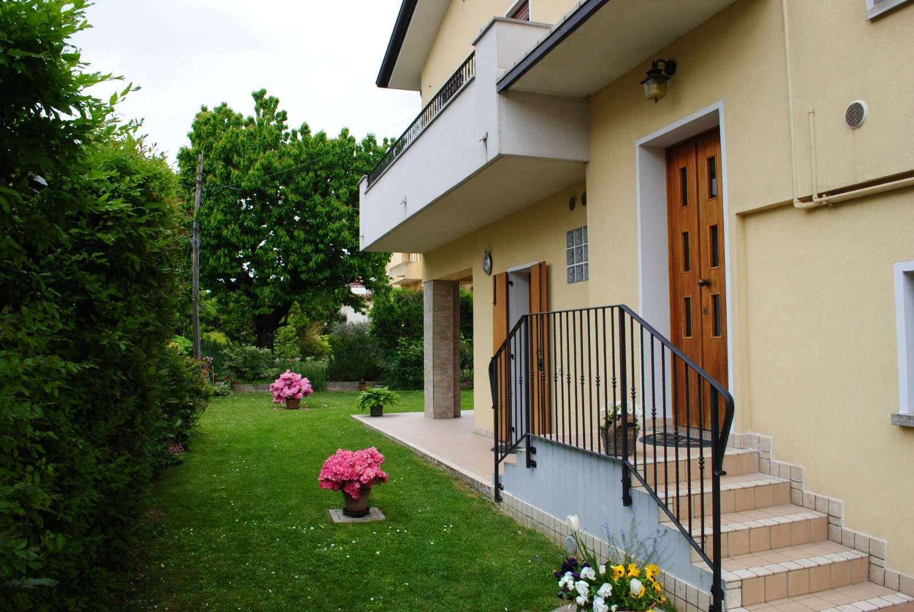

Bed & Breakfast Sile
Accoglienza
Il Bed & Breakfast SILE si trova a Treviso, in un accogliente ambiente di recente costruzione, è facilmente raggiungibile arrivando in auto, treno o areo. E' un ottimo punto di partenza per raggiungere tutta la Marca Trevigiana, Venezia, Padova e e le altre località del veneto. Per maggiori dettagli vi invitiamo a contattarci.
